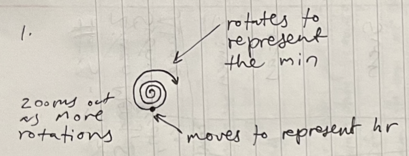
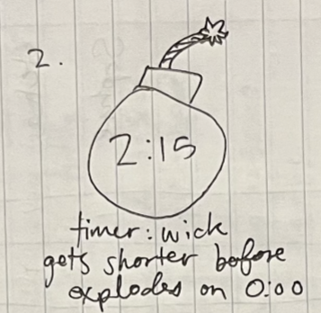

Sketch narrative (replace this and add to the other two sketches!)
This sketch is a digital evolution of an analog clock used for entertainment and telling time.
- Context: This is for computer users who appreciate aesthetics. Ideally, it's used as a widget. I chose this clock because I felt it was a creative and minimal way to tell time. The number of full, 360 degree rotations (in this case, 4) represents the number of minutes, while the position the outside end of the spiral is in represents the seconds. Note that p5.js refers to the right side of the circle as 'zero degrees'; you can see here that the circle has made almost another full rotation to the right. I chose to make it minutes and seconds instead of hours and minutes for this demo because it is easier to see the effect of the clock.
- Design decisions: I chose to follow the tradition layout of a clock so users would easily recognize it as a clock. I chose to label the dots because I was worried users wouldn't be able to read the time otherwise.
- Future work: As a widget, I would allow users to change the color of the clock since it's used for it's aesthetics. I would also like to be able to toggle between labeled dots and hour ticks around the clock.
Sketch evolution

Sketch narrative (replace this and add to the other two sketches!)
This sketch visualizes the user's daily tasks in the form of a 24 hour pie chart style clock.
- Context: This is used for task/time management for work, school, or personal life. I chose to create this daily task clock because I wanted to take a personal twist on the classic design of a clock, and practice using time of day in p5.js. Here, the clock represents a 24 hour day, with tasks scheduled. The hand represents the real-world time.
- Design decisions: I made it a 24 hour clock to represent a full day, including the night. I chose to only include one hand to represent the hour as a minute hand on a pie chart would be confusing.
- Future work: I want to allow users to input their own tasks and time of day.
Sketch evolution

Sketch narrative (replace this and add to the other two sketches!)
This sketch represents a countdown timer that mimics a bomb going off.
- Context: This is a timer for anyone who works better under pressure. It could be used in any countdown context, such as alloted time to finish a test. I chose to create this bomb countdown timer because I wanted to try creating an interactive visualization and use a third different interpretation of time (counting up, daily time, counting down).
- Design decisions: I chose to make it explode when it finishes so the user knows the time is up. I chose a bomb image to mentally install a sense of urgency in the user.
- Future work: I hope to make the wick get smaller as the time ticks down. I also want the time to be displayed in red when there are less than 30 seconds remaining.
Sketch evolution

Adapted from Golan Levin, 2016-2018